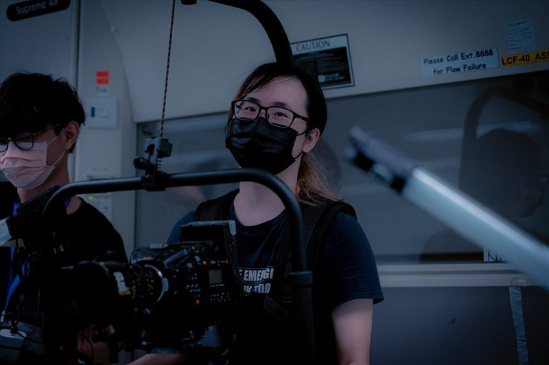

NoodleDoStuff
YU Kwan Yin Timothy
Technical director, system engineer, filmmaker, VFX artist and software developer working across virtual production, real-time systems and live production.
Emailhello@noodledostuff.com
GitHubgithub.com/noodledostuff
PortfolioNoodleDoStuff 2025 作品集（26 MB）
Curriculum VitaeTechnical and production experience
WebsitePersonal portfolio home
Selected WorkVirtual production, mocap, filmmaking and live systems
SkillsetInteractive tools, software and systems map
Imagine Divisiontimothy.yu@imaginedivision.com